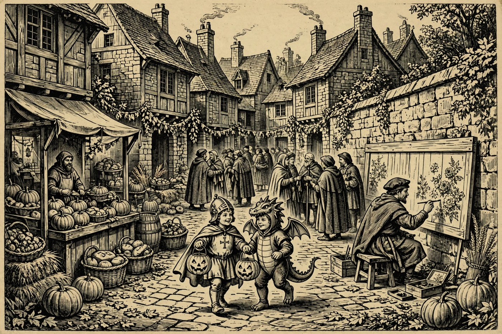

Well met, wayfarer, and a mild Turdas morning to you — grey clouds ride easy over the Rim, the pines stand still and green, and Mogollon’s Hearth lifts a mug to you under an overcast sky. PAYSON — The Payson Hold itself rests quiet today, and the merriment rides abroad: a creekside farmers market in Cornville this afternoon, fly-fishing talk near Show Low, and piano music and tai chi in Prescott. Then the week turns full Halloween — a brand-new gravel bike race rolls into Prescott on Friday, Oct. 30, and trunk-or-treats light up Camp Verde, Sedona, and Show Low on Saturday, Oct. 31. And the week’s crown rides on Sunday, Nov. 1, when a brand-new TJ Maxx throws open its doors right here in Payson. By the Nine, there is plenty here to fill a guest’s day before the rain the weather-wise promise for tomorrow.
Happening in the Holds Today
 Camp Verde— Windmill Park Farmers Market — today from 2 to 6 in the afternoon at Windmill Park, 9950 East Cornville Road in Cornville, just outside Camp Verde. A small-town creekside market, rain or shine — fresh produce, sourdough and baked goods, farm eggs, local honey, goat-milk soaps, jams, pickles, and handmade crafts from local makers. It is a fine guest outing for anyone who shops with their stomach. Come hungry, and bring a bag with room to spare.
Camp Verde— Windmill Park Farmers Market — today from 2 to 6 in the afternoon at Windmill Park, 9950 East Cornville Road in Cornville, just outside Camp Verde. A small-town creekside market, rain or shine — fresh produce, sourdough and baked goods, farm eggs, local honey, goat-milk soaps, jams, pickles, and handmade crafts from local makers. It is a fine guest outing for anyone who shops with their stomach. Come hungry, and bring a bag with room to spare. Show Low— White Mountain Fly Fishing with Jim Goughnour — tonight at 5:30 at 425 South Woodland Road in Pinetop-Lakeside, just south of Show Low, with Arizona Game and Fish and Wildlife for Tomorrow. An evening of fly-fishing talk for the White Mountains — where the fish rise, how the high-country waters fish, and what a beginner needs to start. Anglers and the merely curious are both welcome. A splendid reason for a short evening ride up the mountain.
Show Low— White Mountain Fly Fishing with Jim Goughnour — tonight at 5:30 at 425 South Woodland Road in Pinetop-Lakeside, just south of Show Low, with Arizona Game and Fish and Wildlife for Tomorrow. An evening of fly-fishing talk for the White Mountains — where the fish rise, how the high-country waters fish, and what a beginner needs to start. Anglers and the merely curious are both welcome. A splendid reason for a short evening ride up the mountain. Prescott— Tai Chi with Larry — The 42 Combination Form — today at 4 in the afternoon at The Center on Rosser, 1280 East Rosser Street, Suite B, in Prescott. A guided tai chi session working the 42 Combination Form — slow, steady movement that suits beginners and old hands alike. Wear loose clothes and soft shoes, and settle into the calm. A gentle way to spend a grey afternoon before supper.— Spare Keys Piano Duo at Whiskey and Ivory — tonight at 5 in Prescott. Two pianists, one merry evening of live keys — the kind of small-room music where every table sits close to the song. Arrive early for a good seat, order something warm, and let the duo carry the evening. Music lovers riding over from the Hearth will find it worth the road.— Thursday Social Run — tonight at 5:30 at Mile High Beer Project in Prescott. A friendly group run on a Thursday night — runners of every pace gather, head out together, and come back to good company. First-timers are honored guests, not stragglers. Bring your running shoes and your best stories from the trail.
Prescott— Tai Chi with Larry — The 42 Combination Form — today at 4 in the afternoon at The Center on Rosser, 1280 East Rosser Street, Suite B, in Prescott. A guided tai chi session working the 42 Combination Form — slow, steady movement that suits beginners and old hands alike. Wear loose clothes and soft shoes, and settle into the calm. A gentle way to spend a grey afternoon before supper.— Spare Keys Piano Duo at Whiskey and Ivory — tonight at 5 in Prescott. Two pianists, one merry evening of live keys — the kind of small-room music where every table sits close to the song. Arrive early for a good seat, order something warm, and let the duo carry the evening. Music lovers riding over from the Hearth will find it worth the road.— Thursday Social Run — tonight at 5:30 at Mile High Beer Project in Prescott. A friendly group run on a Thursday night — runners of every pace gather, head out together, and come back to good company. First-timers are honored guests, not stragglers. Bring your running shoes and your best stories from the trail.
The Days Ahead
- Fri, Oct. 30— Prescott — The Rough Rider opens at Courthouse Square in Prescott, a brand-new three-day gravel bike race running Friday, Oct. 30 through Sunday, Nov. 1. Riders take on three stages of high-desert roads based in historic downtown — Stage 1 starts Friday at 9 in the morning at Camp Wood, and the weekend stages finish right on North Cortez Street. Spectators get the best of it: fast starts, dusty finishes, and a square full of food and cheer. Come wave the riders home like bards greeting heroes.
- Sat, Oct. 31— Morning Café on Zoom — Saturday at 9:30 in the morning, from Unity of Payson at 110 East Bonita Street, joined by Zoom. An inspirational start to Halloween day — good words, friendly faces, and an unhurried hour before the costumes come out. Join from the Hearth with a mug in hand; the link stands on the church’s own page. A warm, quiet counterpoint to the night’s merry noise.— Camp Verde Trunk or Treat takes over Main Street in Camp Verde from 5 to 7 in the evening. Businesses, groups, and neighbors line the street with decorated cars and booths, handing out candy to crowds the town counts in the thousands. There are haunted houses, games, music, and a Haunted Jail for the brave, plus a decorating contest. Costumes are the order of the night — bring a bag with room to spare.— Uptown Trick or Treat in Sedona, 5 to 8 in the evening along Uptown’s main street on State Route 89A. Shops stay open late handing out candy as costumed families wander door to door under the red rocks. Look for the “Thriller” flash-mob dance at Sinagua Plaza and the Fire Department’s Haunted Ambulance nearby. It is Sedona’s biggest Halloween gathering — joyful, glowing, and full of tiny dragons and knights.— Show Low Main Street Trunk or Treat — from 3 to 8 in the evening at Hatch Toyota, 1051 North Auto Mall Parkway in Show Low. Trunk-or-treating, music, food, a haunted house, and a Kids Zone, with a trunk-decorating contest offering cash prizes. Presented by Show Low Main Street, it is the town’s main Halloween gathering. Families from across the White Mountains make the trip for this one.
- Sun, Nov. 1— TJ Maxx Grand Opening — Payson’s own brand-new TJ Maxx throws open its doors Sunday, Nov. 1, at 400 East State Highway 260, with opening-day hours from 8 in the morning to 8 at night. Off-price treasures are the house specialty — clothes, shoes, home goods, and gifts at prices to make a bard sing. Arrive early for the best pick of the racks; the whole Hold has waited for this one, and Sunday is the day to be first through the door.— Sedona Community Farmers Market — Sunday from 8 in the morning to noon at 2201 West State Route 89A in Sedona. Local growers and makers spread their tables under the red rocks — produce, baked goods, and handmade wares for a slow Sunday morning. Go early for the best pick of the bread. Valley Dwellers riding home can stock the pantry on the way. A fine close to Halloween weekend.
- Tue, Nov. 3— Trail Day Volunteer Build in Pine — from 7 in the morning to noon, off Highway 87 just before Pine. Pine Strawberry Fuel Reduction calls hikers, bikers, runners, and neighbors to help clear brush, move rocks, and shape a trail the whole community will use for years. The work also opens better access for fire crews, so every hour given does double duty. Tools are provided and no experience is needed — bring water, gloves if you have them, and sturdy shoes, and sign up at trails@psfuelreduction.org.
- Wed, Nov. 4— Bible Study at Juanita’s — Wednesday at 9 in the morning at 139 Hash Knife Drive in Payson. A small, weekly, come-as-you-are study group, warm and unhurried — a quiet, friendly local morning rather than a big event. Guests who like to start a day in good company will feel right at home. No fuss, no fanfare — just neighbors and an open door.— Musicians with Heart Open Mic — Wednesday night at 7 at the Jersey Lilly Saloon in Prescott. Local singers and pickers take their turns in a Whiskey Row saloon while the crowd settles in — and every donation goes to local charity. Part concert, part town gathering with better tunes. Drop in for one song or stay for the whole merry evening.